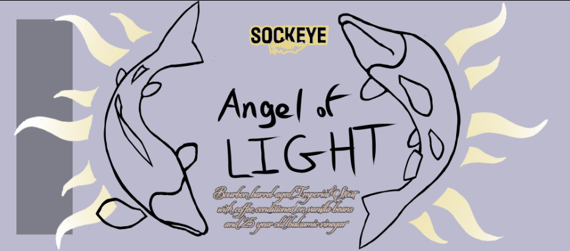
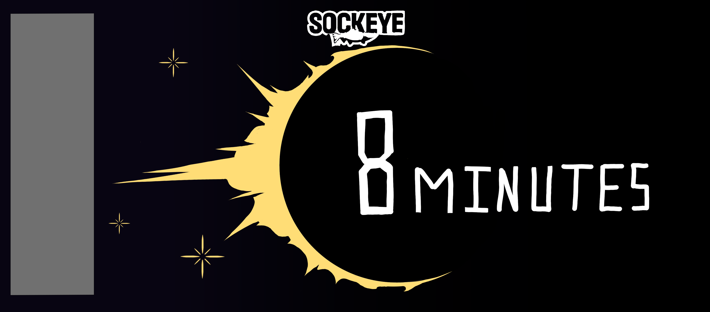
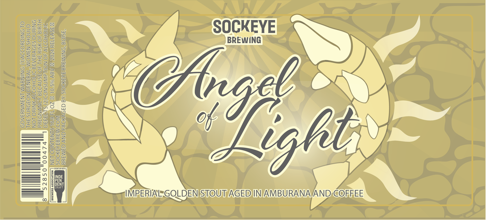
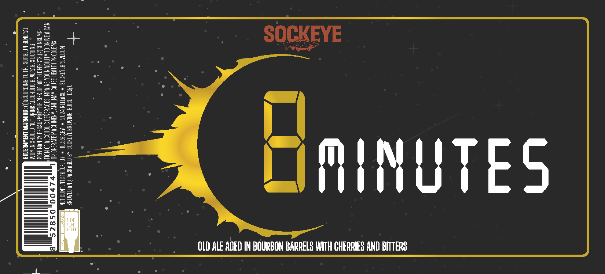
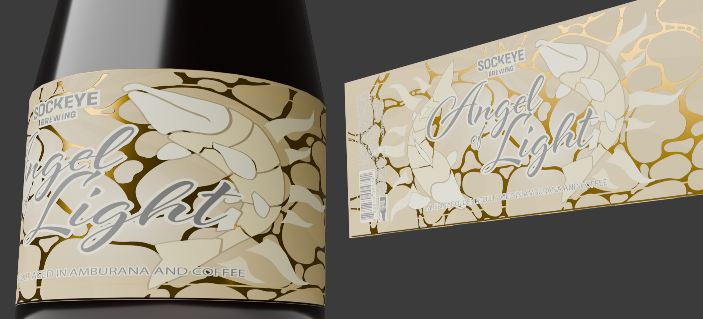
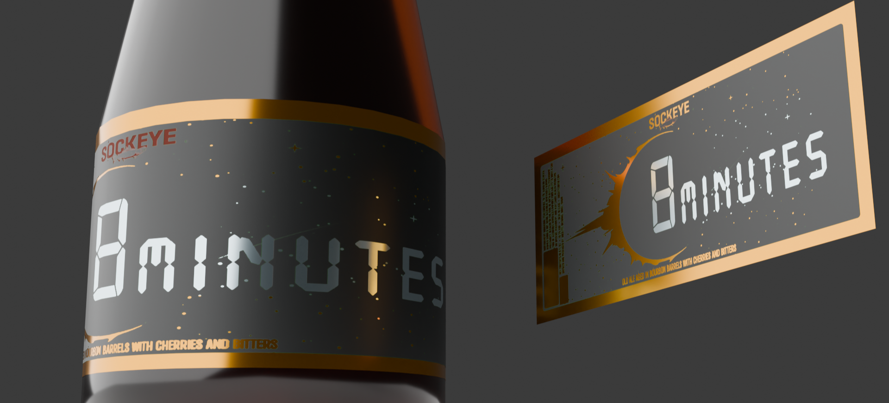

Sockeye Brewing was my my first experience with utilizing my skills in a professional manner. I developed my skills as a graphic designer to create market quality labeling.


Angel of Light and 8 Minutes are two of the graphic design projects that I worked on during my time at Sockeye Brewing. I was brought on to work directly with the marketing director to create labels for the barrel aged line of beer they produce. I was allowed a very hands off start to this project, which I would say now was a downside to the overall project. Feedback between me and my director was slower than I would have liked, preventing me from make valuable iterations to my designs.


Regardless, I am very happy with the overall product that came in the second level of fidelity. Research analysis with my director, as well as others on the salees team provided me with valuable data in which to iterate upon the low fidelity versions. The refinement of the designs provided a polished look and presented the values of the company branding. Considering my background in 3D modeling, I wanted to pursue a proactive approach to graphic design that would be unique to my skills set. To provide my director and by extension the sales team, I rendered a version of the label onto a more easy to visualize medium. Producing a 3D model version of the labeling allowed the marketing team and myself to critique and iterate from a alternate perspective, and in doing so, created the highset quality final product.

